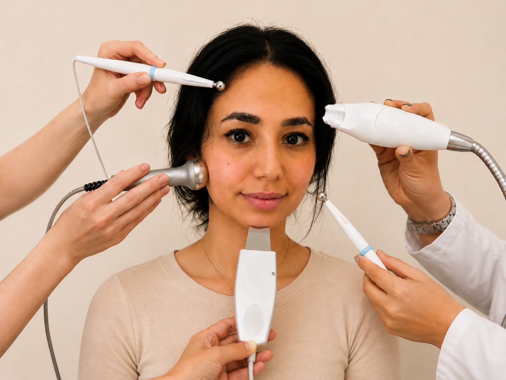
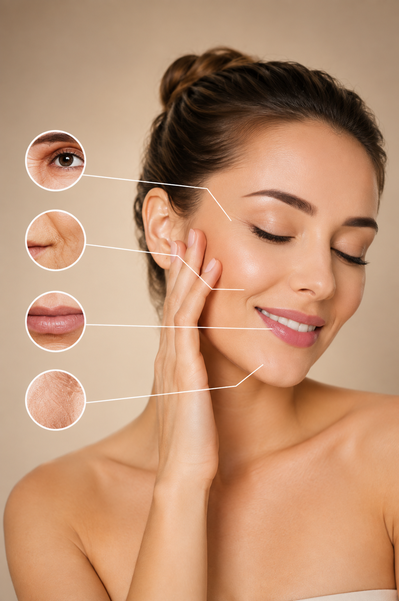

Stevigheid & contour
Radiofrequentie verwarmt de huid gecontroleerd en wordt binnen de esthetische dermatologie toegepast om collageenremodellering te ondersteunen en milde huidverslapping minder zichtbaar te maken.

Ultimate Anti-aging Facial is een uitgebreid behandelprotocol voor huid die minder stevig, droger, doffer of fijner gelijnd begint te ogen.
De behandeling combineert huidvoorbereiding en intensieve verzorging met niet-invasieve technieken zoals radiofrequentie, elektrische spierstimulatie en rode LED-lichttherapie. Iedere techniek heeft een ander doel: RF richt zich op gecontroleerde warmte in de huid, EMS op spieractivatie en LED op photobiomodulation aan het huidoppervlak.
Het doel is geen chirurgische lift, maar een geleidelijk frissere, gladdere en stevigere uitstraling. Welke onderdelen worden ingezet en met welke intensiteit wordt afgestemd op jouw huidconditie en behandelgeschiedenis.
Radiofrequentie verwarmt de huid gecontroleerd en wordt binnen de esthetische dermatologie toegepast om collageenremodellering te ondersteunen en milde huidverslapping minder zichtbaar te maken.
EMS geeft gecontroleerde elektrische impulsen aan oppervlakkige gezichtsspieren. Het doel is activatie en toning; het effect moet worden onderscheiden van echte huidverstrakking of een chirurgische facelift.
Rode LED-photobiomodulation en hydraterende verzorging kunnen worden ingezet om de huidconditie te ondersteunen en een rustige, frisse en meer luminous uitstraling te bevorderen.

Omdat “Ultimate Anti-aging Facial” geen gestandaardiseerde medische technieknaam is, wordt het behandelprotocol afgestemd op de huid en op de apparatuur die veilig kan worden ingezet.
De huid wordt zorgvuldig gereinigd. Daarna beoordelen we onder andere hydratatie, gevoeligheid, textuur, fijne lijntjes en zichtbare huidverslapping.
Microdermabrasie wordt gecontroleerd over de geselecteerde zones bewogen. De opgebouwde warmte vormt een thermische prikkel die collageencontractie en latere collageenremodellering kan ondersteunen. Door de mechanische peeling worden dode huidcellen en vuil diep verwijderd en wordt de doorbloeding van het gelaat gestimuleerd.
Elektrische impulsen en micro-needeling activeren de behandelde gezichtsspieren in korte, gecontroleerde contracties. De intensiteit wordt aangepast aan comfort en aan het gebruikte apparaat.
De huid wordt steviger en komt beter in model. Rode LED-lichttherapie helpt bij huidveroudering, verbetert de huidstructuur en ondersteunt de herstelprocessen.
We sluiten af met verzorging passend bij de huid, met focus op comfort, hydratatie en barrièrefunctie. Vervolgens koelen we de huid af, zodat de poriën zich vernauwen. Overdag blijft dagelijkse zonbescherming een belangrijk onderdeel van iedere anti-aging routine.
Ultimate Anti-aging Facial kan passen wanneer je verschillende vroege of milde tekenen van huidveroudering in één uitgebreid, niet-invasief behandelprotocol wilt laten verzorgen. Bij medische huidaandoeningen of contra-indicaties voor elektrische of RF-apparatuur is eerst een passende beoordeling nodig.
“Ultimate Anti-aging Facial” is geen gestandaardiseerde wetenschappelijke behandelnaam. Daarom moet de onderbouwing worden bekeken per afzonderlijke techniek. Voor radiofrequentie, rode LED-photobiomodulation en elektrische gezichtsstimulatie bestaat onderzoek, maar apparatuur, instellingen en behandelprotocollen verschillen sterk.
RF-onderzoek richt zich vooral op thermische stimulatie van collageen en huidstevigheid. Rode LED wordt onderzocht via photobiomodulation, terwijl EMS/NMES-studies kijken naar elektrische stimulatie van gezichtsspieren en mogelijke veranderingen in huid- en gezichtsparameters.
Studies gebruiken onder andere gestandaardiseerde fotografie, metingen van elasticiteit en rimpeldiepte, klinische beoordeling en in sommige RF-studies histologische analyse van collageen en dermale veranderingen.
Niet-invasieve RF heeft klinische ondersteuning voor verbetering van milde huidverslapping en rimpels. Rode LED-photobiomodulation heeft in klinisch onderzoek verbeteringen laten zien in kenmerken van huidveroudering. Elektrische gezichtsstimulatie is eveneens onderzocht, maar de bewijsbasis is kleiner en resultaten zijn apparaat- en protocolafhankelijk.
De naam “Ultimate Anti-aging Facial” beschrijft geen universeel medisch protocol. De hierboven genoemde onderzoeken beoordelen afzonderlijke technologieën en vaak specifieke apparaten, instellingen en behandelreeksen. Hun resultaten kunnen daarom niet automatisch worden vertaald naar iedere gecombineerde facial of naar iedere cliënt.